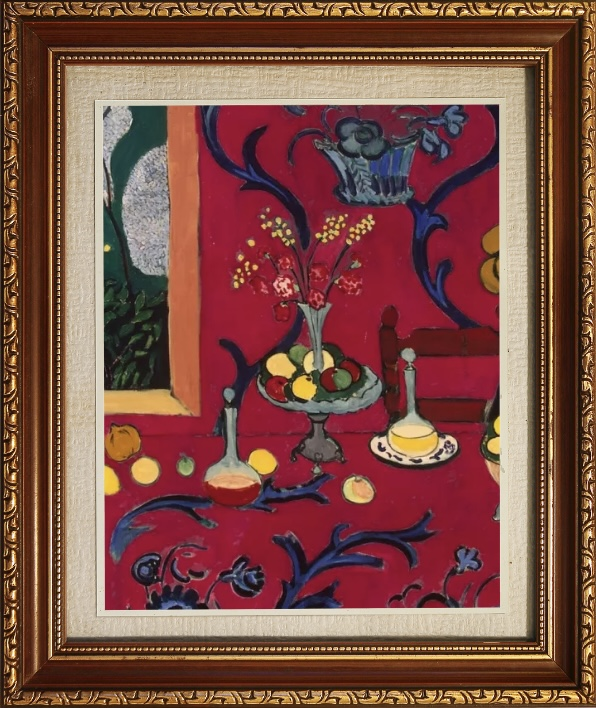

Fauvismo
"El color como emoción.
El arte como libertad."
El Fauvismo liberó al color de la realidad.
Fue una explosión de intensidad, emoción y libertad pictórica que marcó una nueva forma de ver el arte.